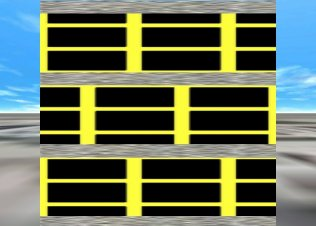
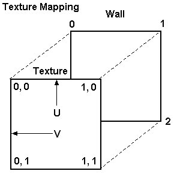

Global Commands/Functions
These commands and functions can be used anywhere
in the script.
1. END command
The End command tells the software to stop
processing the current script and start the simulation. This is
optional.
Example: <end>
2. BREAK command
The Break command triggers a break section in the
script processor, and is used when running a debug build of the
simulator, with a debugger attached. A breakpoint can be set on
the associated line in fileio.cpp, and when this command is
called, the debugger will hit the breakpoint.
Example: <break>
In this section, Destobject refers to the destination
object to create other objects in, which can be:
Floor (only available within a Floor section),
Interfloor (Floor section only),
ColumnFrame (Floor section only),
Shaft [number] (Floor section only),
Stairwell [number] (Floor section only),
Elevator (Elevator section only),
ElevatorCar (Car section only),
External,
Landscape,
Buildings,
(custom model name),
Shaft [number]:[model name] (Floor section only), or
Stairwell [number]:[model name] (Floor section only)
When a command is used inside a Floor section, the Y
values specified in these commands will be offsets (relative) of
the floor's base, except for interfloor and columnframe
names, which use the floor's altitude instead, and custom model
names, which are relative of the model's position. A stairwell
or shaft can be specified as "Shaft 1", and a custom model, such
as one named "Test", can either be specified directly as "Test",
or as part of a Shaft or Stairwell object, as "Shaft 1:Test".
3. Runloop variables
The simulator has a number of runloop variables,
that can be used to get system information. The current
variables are:
1. uptime - stores the SBS engine uptime
2. hour - stores the SBS engine virtual hour
3. minute - stores the SBS engine virtual minute
4. second - stores the SBS engine virtual second
5. real_hour - stores the system hour
6. real_minute - stores the system minute
7. real_second - stores the system second
Example:
Set
firstrun = true
<Function runloop>
if[%uptime% = 10 & %firstrun% = true]
Print hello
Set firstrun = false
<EndFunction>
The example prints the word "hello" after the sim engine has
been running for 10 seconds.
a. AddTriangleWall - adds a
textured triangular wall. This is the same as AddCustomWall, but
with only 3 coordinates used. If specified in a floor section,
the Y values are then relative to the floor base.
Syntax: AddTriangleWall
destobject, name, texturename, x1, y1,
z1, x2, y2, z2, x3,
y3, z3, tw, th
Example: AddTrianglewall
external,
My Triangle, Brick, 0, 0, 0, 0, 10, 0, 0, 0, 10, 0, 0
b. AddWall - adds a textured wall
Syntax: AddWall
destobject, name, texturename, thickness, x1,
z1, x2, z2, height1, height2,
altitude1, altitude2, tw, th
Example: AddWall
buildings, Wall1, Brick, 0.5, -10, -10, 10, 10, 15, 15,
Floor(2).Altitude, Floor(2).Altitude, 0, 0
The command's parameters are the same as the Floor section's AddWall command. This command is not available inside sections, due to section-specific AddWall commands.
c. AddFloor - adds a textured
floor
Syntax: AddFloor
destobject, name, texturename, thickness, x1,
z1, x2, z2, altitude1,
altitude2, reverse_axis, texture_direction, tw,
th
The command's parameters are the same as the Floor section's AddFloor command. This command is not available inside sections, due to section-specific AddFloor commands.
d. AddGround - adds a tile-based
ground
Syntax: AddGround
name, texturename, x1, z1, x2,
z2, altitude, tile_x, tile_y
Example: AddGround AddGround Ground, Downtown, -158400,
-158400, 158400, 158400, 0, 7920, 7920
This command is mainly for creating large ground sections, since using the AddFloor function with a large amount of texture tiling causes interference problems. The X and Z values specify the total size of the ground, and the tile_x and tile_y specify the size of each tile square to create. For example, if the ground is 10,000 feet wide, and tile_x and tile_y are both 1000, then 100 total tiles will be created; 10 wide and 10 deep. In the example above 7920 is 1/40 of the total width (316800 which is 158400 * 2), so the tile grid will be 40x40 tiles.
e. CreateWallBox - creates 4
walls (box) at the specified coordinate locations
Syntax: CreateWallBox
destobject, name, texturename, x1,
x2, z1, z2, height, voffset,
tw, th, inside, outside, top, bottom
Example: CreateWallBox
external,
My Box, Brick, -10, 10, -10, 10, 15, 0, 0, 0, true, true,
true, true
The parameters in this command are very similar to the ones in the AddWall command shown below in the Floor section, except that a box is created instead of a single wall. Inside and outside determine if the wall should be visible from the inside/outside, and top and bottom determine if the top and bottom walls should be drawn.
f. CreateWallBox2 - creates 4
walls (box) at a specified central location
Syntax: CreateWallBox2
destobject, name, texturename, centerx,
centerz, widthx, lengthz, height,
voffset, tw, th, inside,
outside, top, bottom
Example: CreateWallBox2
external,
My Box, Brick, 0, 0, 10, 10, 15, 0, 0, 0, false, true, false,
false
The parameters are the same as the above command,
except that centerx and centerz define the
center of the box, and widthx and lengthz
specify the width and length off of the center.
g. AddCustomWall - creates a custom polygon
(wall, floor, etc) with any number of vertex points. For
example, a triangular wall has 3 vertex points, and a standard
wall has 4. This function allows at least 3 vertices. The
polygon will be two-sided if the DrawWalls command's
MainNegative and MainPositive parameters are true. The RelativeY
parameter is optional, and if not specified, when in a floor
section, the Y values are always absolute (not relative of the a
floor), for compatibility. If the RelativeY parameter is true,
and in a floor section, the Y values are relative of the floor's
base.
Syntax: AddCustomWall
destobject, name, texturename[, RelativeY], x1, y1, z1,
x2, y2, z2, x3, y3, z3, ..., tw, th
Example 1: AddCustomWall
external,
My Wall, Brick, 0, 0, 0, 0, 10, 0, 10, 10, 0, 15, 5, 0, 10, 0,
0, 0, 0
Example 2: AddCustomWall
external,
My Wall, Brick, true, 0, 0, 0, 0, 10, 0, 10, 10, 0, 15, 5, 0,
10, 0, 0, 0, 0
h. AddCustomFloor - the same as
AddCustomWall, but with only one vertical parameter. If
specified while in a floor section, the altitude is relative to
the current floor's base.
Syntax: AddCustomFloor
destobject, name, texturename, x1, z1, x2, z2, x3, z3,
..., altitude, tw, th
Example: AddCustomFloor
external,
My Wall, Brick, 0, 0, 0, 10, 10, 10, 10, 0, 0, 0, 0
i. AddShaft - creates a shaft at
a specified location and floor range
Syntax: AddShaft
number, centerx, centerz, startfloor, endfloor
Example: AddShaft
1, 10, 10, 0, 9
The number parameter specifies the shaft number to create. This command just tells the simulator the area that the shaft will take up, and does not create the actual shaft walls. Later on when you create the walls/floors for the shaft, make sure that you make a floor at the very bottom and very top of the shaft (they can extend beyond the walls).
j. CreateStairwell - creates a
stairwell at a specified location and floor range
Syntax: CreateStairwell
number, centerx, centerz, startfloor, endfloor
Example: CreateStairwell
1, 10, 10, 0, 9
The number parameter specifies the stairwell number to create. This command just tells the simulator the area that the stairwell will take up, and does not create the actual walls.
k. WallOrientation - changes the
internal wall orientation parameter, which is used for
determining the wall thickness boundaries in relation to their
coordinates.
Syntax: WallOrientation
= direction
Example: WallOrientation
= left
The direction parameter can either be left, center, or right. Center is default. For example, if center is used, than half of the wall's thickness is to the right (positive) of it's x1/x2 or z1/z2 coordinates, and half is to the left (negative) of the coordinates. If left is used, than the coordinates define the wall's left (negative) edge, and the full thickness is to the right (positive) of those. If right is used, then again the coordinates define the wall's right (positive) edge, and the full thickness is to the left (negative) of those. See this graphic for a good example:

In the graphic above, the large box at the top shows what the X and Z coordinates correspond to. The lower examples show the wall orientation as left or right, and if either the difference in x values or z values is larger.
l. FloorOrientation - changes the
internal floor orientation parameter, which is used for
determining the floor thickness boundaries in relation to their
coordinates.
Syntax: FloorOrientation
= direction
Example: FloorOrientation
= bottom
The direction parameter can either be bottom, center, or top. Top is default. For example, if center is used, than half of the floor's thickness is above (positive) it's x1/x2 or z1/z2 coordinates, and half is below (negative) the coordinates. If bottom is used, than the coordinates define the floor's bottom edge, and the full thickness is the top (positive). If top is used, then again the coordinates define the floor's top edge, and the full thickness is the bottom (negative).
m. DrawWalls - specifies which
parts of a wall or floor should be drawn.
Syntax: DrawWalls
= MainNegative, MainPositive, SideNegative, SidePositive,
Top, Bottom
Example: DrawWalls
= true, true, false, false, false, false
The example shown is the default setting. MainNegative is the main (that makes up the front of a wall lengthwise, or the top area of a floor) face on the negative side, MainPositive is the main face on the positive side (back of a wall, or the bottom area of a floor), SideNegative is the side (the part that is along the thickness) face on the negative side, SidePositive is the side face on the positive side; Top refers to either the top side if a wall, or to the front face if a floor; Bottom refers to either the bottom side if a wall, or the back face if a floor. The following graphic explains the sides in detail:

n. SetPlanarMapping - sets the
planar texture mapper's parameters.
Syntax: SetPlanarMapping
Flat, FlipX, FlipY, FlipZ, Rotate
Example: SetPlanarMapping
false,
false, false, true, false
FlipX, FlipY and FlipZ reverse the texture mapping per axis, and Flat has it ignore depth., Skyscraper by default uses a simple planar texture mapper, which in simple terms draws the texture in a box around the object. With a basic wall, the top-left of the texture image is mapped to the top left of the wall, the top-right is mapped to the top-right of the wall, etc. If you want the top-right of the texture mapped to the top-left of the wall for example (to flip or change alignment), you'd set FlipX to false. This command is mainly used to change alignment - since the top-left of the texture is mapped to the top-left of the object, that means that textures have a left/top alignment by default. If you change FlipX to true, it'll be right-aligned. If you change FlipY to true, it'll be bottom-aligned. Rotate has it rotate the texture mapping 90 degrees counterclockwise, so instead of the texture being mapped from the top left to bottom right, if Rotate is true, it'll be mapped from the bottom left to top right. See this picture for an example:

In the above picture, I tiled a texture (a black box with yellow around it) 2.5 times on width and height. The bottom floor shows the default texture mapping (SetPlanarMapping false, false, false, false, false); you'll notice that it's aligned to the top-left. In the middle one, I set the FlipX value to true (SetPlanarMapping false, true, false, false, false). In the top one, I set the FlipY value to true (SetPlanarMapping false, false, true, false, false).
o. SetTextureMapping - manually
sets UV texture mapping for all polygons generated after this
command; ResetTextureMapping restores the values to the defaults
or previous
Syntax: SetTextureMapping
vertex1, u1, v1, vertex2, u2, v2, vertex3, u3, v3
Example: SetTextureMapping
0, 0, 0, 1, 1, 0, 2, 1, 1
The example shown above is the default value used
by the simulator. This command maps the texture coordinates to
the specified 3 vertex indices - normally a side of a wall will
have 4 vertices/sets of coordinates (0 to 3), and by default the
first three are used (top left, top right and bottom right
respectively), with the UV coordinates representing the size
percentage of the texture (with 1 being 100%, 0.5 being 50%,
etc; normally this would relate to absolute texture coordinates)
- so in the example, texture coordinate 0,0 (top left) is mapped
at the first vertex (top left); texture coordinate 1,0 (really
"width, 0") being mapped at the second vertex (top right), and
texture coordinate 1,1 (really "width, height") being mapped to
the bottom right. For a standard wall, the valid vertex values
are from 0 to 3. If a wall or floor is created with
AddCustomWall, and if it has for example 7 vertex points, the
valid values for this command would then be 0 to 6 (but only 3
vertices can be used for mapping purposes). One caveat with
manual texture mapping is that sometimes the simulator will
automatically reverse the vertices to keep the wall faces
oriented properly, so if you set your texture mapping this way
and notice issues, try reversing the coordinates (u3 would be u1
for a 3-point triangular wall, etc) and see if that helps.
Textures can also be cropped with this command - for example, to
map only a central square of a texture, you'd use:
SetTextureMapping
0, 0.25, 0.25, 1, 0.75, 0.25, 2, 0.75, 0.75
Here's an easier way to see the example above:
0
-> 0, 0
1 -> 1, 0
2 -> 1, 1
The following diagram shows the mapping described above. Texture location 0,0 is mapped to wall vertex 0, location 1,0 is mapped to vertex 1, etc:

p. SetTextureMapping2 - advanced
version of SetTextureMapping - manually sets UV texture mapping
for all polygons generated after this command;
ResetTextureMapping restores the values to the defaults or
previous
Syntax: SetTextureMapping2
v1x, v1y, v1z, u1, v1, v2x, v2y, v2z, u2, v2, v3x, v3y,
v3z, u3, v3
Example: SetTextureMapping2
x0,
y0, z0, 0, 0, x1, y1, z1, 1, 0, x2, y2, z2, 1, 1
See the above description of SetTextureMapping for a detailed description on texture mapping in general. This command mostly does the same as that command, and the example given is the default command (and is equivalent to the SetTextureMapping example). Instead of just choosing which vertex indices to use like SetTextureMapping, this command lets you create your own texture vertices (sets of coordinates) using coordinates of already-existing vertices. The vertex values that can be used start with an "x", "y" or "z", followed by the vertex index. In the example, the X, Y and Z values of the first vertex are mapped to UV coordinate 0,0 - this is because "x0, y0, z0" was specified. A specification of "x0, y2, z0" will use the X and Z values from vertex 0, but the Y value from vertex 2. This way you can specify coordinates outside of the wall/polygon's range. Here's an easier way to see the example:
x0,
y0, z0 -> 0, 0
x1, y1, z1 -> 1, 0
x2, y2, z2 -> 1, 1
q. ResetTextureMapping - resets
the texture mapping parameters to either the default or previous
values
Syntax: ResetTextureMapping
= default
Example: ResetTextureMapping
= true
If default is true, the texture mapping values are reset to the default, which is shown above in the SetTextureMapping's example. If default is false, the previous values will be loaded and used.
r. ReverseAxis - this command is
deprecated, and only used for older versions of the AddFloor
commands, since the current ones have this option built-in. This
reverses the axis that the difference in altitude/voffset for
floors corresponds to. In the AddFloor command, there are
parameters for specifying two different altitudes. By default,
if the altitudes are different, the floor will angle
upward/downward along the Z axis (front/back), but if this is
set to true, the floor will angle along the X axis (left/right).
Syntax: ReverseAxis
= value
s. ShaftCut - used in conjunction
with a shaft object - performs a vertical box cut on all floor
objects (floors, ceilings, interfloor, etc) in the specified
range.
Syntax: ShaftCut
number, startx, startz, endx, endz, start_voffset,
end_voffset
Example: ShaftCut
1, -4, -3.5, 4, 3.5, 0, 5
Number is the number of the shaft object to work with. Startx, startz, endx, and endz are two sets of coordinates that specify the cut box's start position and end position, relative to the shaft's central position. Start_voffset is the position above the starting floor's altitude to start the cut at, and end_voffset is the position above the ending floor's altitude to end the cut at. The example cuts a box for shaft 1, with a width from -4 to 4, and a length from -3.5 to 3.5, starting at the starting floor's altitude, and ending at 5 feet above the ending floor's altitude.
t. CutStairwell - used in
conjunction with a stairwell object - performs a vertical box
cut on all floor objects (floors, ceilings, interfloor, etc) in
the specified range. For the parameters, see the ShaftCut
command.
Syntax: CutStairwell number, startx, startz, endx, endz,
start_voffset, end_voffset
Example: CutStairwell
1, -4, -3.5, 4, 3.5, 0, 5
u. Isect - the Isect function
calculates the position that a line intersects with a certain
object, such as a floor. Since this is a function, it can be
used in-line anywhere.
Syntax: isect(destobject,
objectname,
startx, starty, startz, endx, endy, endz)
Example: isect(external,
wall1,
10, 10, 0, -10, 10, 0)
Destobject is the destination object to
get the object from (see the top of this section for more info).
Startx, starty, and startz make up
the position of the starting position, and endx, endy
and endz make up the ending position. The first
intersection of the named object is the return value, in "X, Y,
Z" format (for example, "10, 1, 3").
For an example, start up the Simple building and enter this into
the console:
print
isect(external, front, 0, 5, -60, 0, 5, 0)
This command will do a line intersection from the camera's
starting position, forward, and will print out the position that
it intersects with the External mesh's "Front" wall, the one
visible in front of you.
v. SetAutoSize - enables or
disables texture autosizing
Syntax: SetAutoSize
= AutoWidth, AutoHeight
Example: SetAutoSize
= true, true
This command will determine if the simulator should automatically size texture appropriately when applied to an object, such as a wall or floor. By default, both are enabled. The AutoWidth and AutoHeight parameters correspond to the "tw" and "th" parameters of the AddWall, AddFloor, etc commands. If any are false, then the parameters specified in the AddWall etc commands multiply the texture values stored with with the Load or LoadRange commands (see below); those values relate to the number of times a texture is tiled; so if AutoHeight is set to False, "2" is specified in the "th" value of AddWall, and the texture's stored "th" value is 1, then the texture will be tiled twice vertically. If either are true, the specified value will me multiplied by the related stored texture value and then autoadjusted.
w. TextureOverride - overrides
textures for the next command. Currently works with the
different AddWall, AddFloor, AddInterFloor and
CreateWallBox/CreateWallBox2 commands.
Syntax: TextureOverride
MainNegativeTex, MainPositiveTex, SideNegativeTex,
SidePositiveTex, TopTex, BottomTex
Example: TextureOverride
Metal1,
ElevFloor, Metal1, Metal1, Metal1, Metal1
This command will allow you to specify multiple textures for a single command such as AddWall. It will only work on the command immediately after this one. In the above example, the Main Positive side of the object will have the texture "ElevFloor", but all other sides will use "Metal1".
x. ShaftShowFloors - allows a
range of floors to be shown in an elevator or shaft, primarily
for glass elevators.
Syntax: ShaftShowFloors
ShaftNumber = range/list[, full]
Example: ShaftShowFloors
1 = 1 - 10
Example 2: ShaftShowFloors
1 = 1 - 10, true
The full parameter is optional, and if it is false or not specified (the default), only a range of floors are shown at a time (by default 3 at a time, and only the ones specified), while the elevator is moving, and is normally used in conjunction with the Group command for atriums. If full is true, all the floors in the list or range are shown at a time, while the user is in the shaft, regardless of if the elevator is moving or not, and are disabled when the user exits the shaft. In the first example above, let's say the user is in an elevator in shaft 1, and is moving upwards from the 2nd floor. In this situation, floors 1 to 10 will be displayed, either a few at a time or the whole set (depending on the Group command), but after they go beyond the range, those floors will be disabled. In the second example, when the user enters the shaft or elevator, floors 1 to 10 will all be enabled, and when they exit the elevator/shaft, those floors will be disabled. For a basic glass elevator, the second example would be used, along with the Group command to group floors 1 to 10 together.
y. ShaftShowInterfloors - display
specific interfloors while inside a shaft. This is primarily for
pipe/utility shafts.
Syntax: ShaftShowInterfloors
ShaftNumber = range/list
Example: ShaftShowInterfloors
1 = 1 - 10
z. ShaftShowOutside - allows
objects outside the building (sky, landscape, etc) to be enabled
while the user is both inside the specified shaft and on one of
the specified floors - primarily for glass elevators.
Syntax: ShaftShowOutside
ShaftNumber = range/list
Example: ShaftShowOutside
1 = 1 - 10
In the above example, if a user is riding an elevator in shaft 1, the outside (sky, landscape, etc) will be enabled while the elevator is on any of the floors from 1 to 10. Once the elevator reaches the 11th floor, the outside will be disabled. This command can be mixed with ShaftShowFloors for mixed atrium/external glass elevators such as the ones in the Glass Tower, where the elevator moves upwards through an indoor atrium, and eventually outside above the atrium. In that situation, the floors that comprise the lower (atrium) section would be specified using ShaftShowFloors (such as 1-10), while the upper (outdoor) floors would be specified using ShaftShowOutside (such as 11-20).
aa. ShowFullShaft - determines if
an entire shaft should always be shown, such as a glass elevator
track.
Syntax: ShowFullShaft
ShaftNumber = value
Example: ShowFullShaft
1 = true
ab.
StairsShowFloors - allows a range of floors to be
shown while inside the specified stairwell.
Syntax: StairsShowFloors
StairwellNumber = range/list
Example: StairsShowFloors
1 = 1 - 10
In the above example, let's say the user is in stairwell 1, and
is walking upwards from the 2nd floor. In this situation, the
2nd floor will be visible/enabled while they're walking up
(since it was in the range specified with this command), but
when they reach the 11th floor, that floor will be
invisible/disabled.
ac.
ShowFullStairs - determines if an entire stairwell
should be shown. If set to "true" or "inside", the full
stairwell is shown only when the user is inside the stairwell.
If set to "always", the full stairwell is always shown. Setting
this to true is useful for stairwells that have a gap in the
center between the actual stairs.
Syntax: ShowFullStairs
StairwellNumber = value
Example: ShowFullStairs
1 = inside
ad. TextureFlip - flips specified
textures for the next command.. Currently only works with the
different AddWall, AddFloor and AddInterFloor commands. The
values available are 0 for no flipping, 1 for horizontal flip, 2
for vertical flip, and 3 for both horizontal and vertical.
Syntax: TextureFlip
MainNegative, MainPositive, SideNegative, SidePositive,
Top, Bottom
Example: TextureFlip
1, 1, 0, 0, 0, 0
This command will allow you to flip textures on specific parts of a wall or floor created with a command such as AddWall. It will only work on the command immediately after this one. In the above example, the Main Positive and Main Negative sides of the object will have their textures flipped horizontally.
ae. Cut - performs a manual box
cut on an object
Syntax: Cut destobject,
x1,
y1, z1, x2, y2, z2, cutwalls, cutfloors
Example: Cut external, -5, -5, -5, 5, 5, 5, false, true
The x, y and z values specify the start and end coordinates of the box cut. If cutwalls is true, the function will cut walls; if cutfloors is true, it'll cut floors.
af. Mount - mounts a zip file in
the data directory into a virtual path.
Syntax: Mount
filename, path
Example: Mount
myfile.zip, mydirectory
In this example, the file myfile.zip located in Skyscraper's data directory will be mounted as "mydirectory", and so a file such as test.jpg inside that zip file will appear as "mydirectory/test.jpg".
ag. AddFloorAutoArea - defines an
area that will automatically enable and disable floors when the
user moves within it, similar to a stairwell
Syntax: AddFloorAutoArea
x1, y1, z1, x2, y2, z2
Example: AddFloorAutoArea
-100,
0, -100, 100, 100, 100
ah. AddSound - creates a
user-defined sound at the specified position
Syntax: AddSound
name, filename, x, y, z, loop[, volume, speed,
min_distance, max_distance, doppler_level,
cone_inside_angle, cone_outside_angle, cone_outside_volume,
direction_x, direction_y, direction_z]
Example 1: AddSound
MySound, sound.wav, 10, 100, 5, true
Example 2: AddSound MySound, ambient.ogg, 10, 100, 5, true, 1, 100,
1, -1, 0, 360, 360, 1, 0, 0, 0
This command creates a custom sound in the specified position, and has a number of optional parameters - the defaults for the optional parameters are shown in Example 2. Loop specifies if the sound should loop and play on startup. If you're going to use any of the optional parameters, you must specify them all. X, Y and Z specify the location in 3D space that the sound will be at, volume specifies the volume percentage (with 1.0 being 100%) of the sound, speed determines the playback speed of the sound in percent, min_distance and max_distance set the minimum and maximum distances that the sound can be heard at full volume - by default, minimum is 1 and maximum is -1. Doppler_level specifies the doppler scale for the sound (0 means off, the default, 1 is normal, 5 is max). Cone_inside_angle is the angle within which the sound is at it's normal volume (default 360), cone_outside_angle is the outside angle that the sound is at it's normal volume (default 360, shouldn't be less than the inside angle), and cone_outside_volume is the volume level of the sound outside (0.0 to 1.0, default 1.0). Direction_x, direction_y and direction_z specify the direction of the sound cone.
ai. AddReverb - creates a reverb
object at the specified position
Syntax: AddReverb
name, type, x, y, z, min_distance, max_distance
Example: AddReverb
MyReverb, ConcertHall, 0, 0, 0, 0, 100
Reverb objects apply a certain type of reverb in a sphere.
All sounds within this sphere are then heard with the
reverb. Min_distance and max_distance
determine the distance from the center (X, Y, Z values) that the
reverb can be heard.
Type specifies the type of reverb:
Generic
PaddedCell
Room
Bathroom
LivingRoom
StoneRoom
Auditorium
ConcertHall
Cave
Arena
Hangar
CarpetedHallway
Hallway
StoneCorridor
Alley
Forest
City
Mountains
Quarry
Plain
ParkingLot
SewerPipe
Underwater
aj. GetWallExtents - the
GetWallExtents command returns the X and Z extents (minimum and
maximum values) of a wall, at the specified altitude. The
command will return the results in the MinX, MinZ, MaxX and MaxZ
variables.
Syntax: GetWallExtents
destobject, wallname, altitude
Example: GetWallExtents
external,
wall1:front, 10
Then to use the values:
Example: Set 2
= %minz%
Destobject is the destination object to get the object from (see the top of this section for more info). Wallname specifies the name of the wall to get the extents from. Generally this should be in the form of "name:side", but if you leave out the "side" parameter, it'll choose one of the sides from a pre-defined search list. Sides of walls made from any AddWall command generally have "front", "back", "left" and "right" sides. Walls made using AddCustomWall and AddTriangleWall have sides of "0" (front) and "1" (back), so with those you'd specify "name:0" for the front. Altitude specifies the altitude to use for the check - basically it makes a copy of the wall, cuts it down to a line at that altitude, and returns the coordinates of the endpoints. The command will store the results in the MinX, MinZ, MaxX and MaxZ variables, which can be used anywhere in the script - to get the minimum X result, you'd use %minx%.
ak.
AddAction - defines an action, to be used by custom
controls and triggers.
Syntax: AddAction
name, parent_object, command[, parameters]
Example: AddAction
MyAction,
Floor 2, ChangeTexture, OldTexture, NewTexture
Example: AddAction
MySoundAction,
Floor 2, PlaySound, Sound1, false
This command creates a global action, to be used with commands such as AddActionControl and AddTrigger. Name must be a globally-unique name. If the same name is used for multiple actions, all of those actions will be run when an object uses that name. Parent_object is the object to use to perform the action on. Currently includes "Global", floors such as "Floor 2", elevators such as "Elevator 1", elevator cars such as "Elevator 1:Car 2", shafts like "Shaft 1", stairwells like "Stairwell 2", call buttons such as "Floor 0:Call Panel 1", and can also be specified as a range of objects, such as "Floors 3 to 8".
Commands and parameters:
(General)
ChangeTexture: oldtexture, newtexture
PlaySound: name, loop true/false
StopSound: name
Teleport: X, Y, Z (destination coordinates to teleport
camera to)
GotoFloor: floor_number (teleport to specified floor
number
OpenShaftDoor: door number (0 for all), floor number
(parent needs to be the elevator object)
CloseShaftDoor: door number (0 for all), floor number
(parent needs to be the elevator object)
OpenShaftDoorManual: door number (0 for all), floor
number (parent needs to be elevator object)
CloseShaftDoorManual: door number (0 for all), floor
number (parent needs to be elevator object)
AccessDown: floor number (parent needs to be elevator
object)
AccessOff: floor number (parent needs to be elevator
object)
AccessUp: floor number (parent needs to be elevator
object)
(for other elevator commands, see the AddControl command in the
elevator section)
Forward, Reverse, or Stop (parent needs to be an
Escalator or MovingWalkway)
Enable or Disable (these are used by
CameraTextures)
On and Off (these are used by Lights and
Revolving Doors)
Open and Close (used by Doors)
AutoClose: interval (used by Doors)
StartSlideshow: name (used by TextureManager)
StopSlideshow: name (used by TextureManager)
SetTexture: name, filename (used by TextureManager)
The PlaySound command plays sounds created with the AddSound command. With this command, if multiple sounds have the same name, all of those sounds will be played simultaneously when the related action is run.
OpenShaftDoor example, to open elevator 1's shaft doors on floor 2:
AddAction MyDoorOpen, Elevator 1, OpenShaftDoor, 0, 2
PlaySound example, to play sound FireAlarm created using the AddSound command on Floor 1:
AddAction MySound, Floor 1, PlaySound, FireAlarm, true
The Access
commands enable and disable Hoistway Access Mode on the
elevator, which is part of Inspection Mode.
For example, when AccessUp is used by a switch on the
elevator's lowest landing, and the elevator is in inspection
mode with the shaft doors open, the interlock check for that
shaft door is disabled, and the elevator will move upwards at
leveling speed. If AccessDown is set, the elevator
will move down. When AccessOff is set, the elevator
will refuse to move, due to the shaft doors being open, which
causes the interlock check to fail.
Actions
can be performed on the TextureManager system too. To
change the filename of a loaded texture for example, do
something like this:
AddAction
UpdateTexture, TextureManager, SetTexture, Brick,
data/cutston.jpg
al.
AddActionControl - creates a custom control that uses
a specific action defined by AddAction.
Syntax: AddActionControl
name, sound, direction, centerx, centerz, width, height,
voffset, selection_position, action_name(s), texture_name(s)
Example: AddActionControl MyControl, switch.wav, front,
-10, 10, 1.5, 1.5, 4, 1, UndoMyAction, MyAction, Touch,
TouchLit
AddActionControl command creates an advanced control similar to
elevator button panel controls, but assigned to an action
created with the AddAction command. The action_name(s)
and texture_name(s) parameters allow you to specify a
list of actions, and a list of textures to go along with those
actions. There needs to be a texture for every action; if you
specify 3 actions and only 2 textures, you will get an error.
The control starts up in the first action, and switches to the
next actions in sequence when it's clicked. Direction
is the direction the control itself will face in 3D space
(front, left, right, back). Leave the sound field blank for no
sound to be played. Selection_position is the
selection position to start at, which is normally 1.
am.
AddTrigger - creates a trigger that is used to signal
an action when the user's camera enters or leaves the defined
area.
Syntax: AddTrigger
name, sound, start_x, start_y, start_z, end_x, end_y,
end_z, action_names(s)
Example: AddTrigger MyTrigger, switch.wav, -30, 0, -30,
-20, 10, -20, UndoMyAction, MyAction
AddTrigger creates a trigger similar to action controls
(AddActionControl) and elevator controls. The action_names(s)
parameter allows you to specify a list of actions that this
trigger will call when the camera enters or exits the area. The
trigger starts in the first action, and will switch to each
consecutive action when the users enters/leaves. The X,
Y and Z parameters specify the 3D box that
defines the trigger area. Leave the sound field blank
for no sound to be played.
an.
AddModel - adds a global 3D model. If a filename is
specified, the model's textures/materials must be defined in a
separate ".material" file, and a separate collider mesh
".collider.mesh" will be loaded. In that situation, if a
collider mesh isn't available, a simple box collider will be
created. If a filename is not specified, this command will
create a new empty model, where it's name can be used as the destobject
parameter in other commands, and a collider will be
automatically created.
Syntax: AddModel name,
filename,
center, CenterX, CenterY, CenterZ, RotationX, RotationY,
RotationZ, MaxRenderDistance, ScaleMultiplier,
EnablePhysics, Restitution, Friction, Mass
Example 1: AddModel MyModel, cube.mesh, true, 0, 0,
0, 0, 0, 0, 0, 1, false, 0, 0, 0
Example 2: AddModel
MyModel, cube.mesh, true, 0, 0, 0, 0, 0, 0, 0, 1, true, 0.1,
0.5, 0.1
Example 3: AddModel
MyModel, , false, 0, 0, 0, 0, 0, 0, 0, 1, true, 0.1, 0.5, 0.1
The Center value is either true or false, and determines if the loaded model should be automatically centered, otherwise the exact mesh positioning in the model file will be used. MaxRenderDistance determines the maximum distance in feet that the object will be shown (0 means unlimited). ScaleMultiplier allows you to change the size of the object during the load - for example, set to 2 to double the size. Model files are in the OGRE native mesh format. In the example, the material/texture file is cube.material, and the optional collider mesh file is cube.collider.mesh. EnablePhysics enables Bullet physics on the object (physics will only work if you don't provide a collider mesh), and Restitution, Friction and Mass determine the physical properties of the object.
ao.
CreateWallObject - creates a custom wall object, in
the specified mesh object. Wall objects are used to contain a
number of polygons, to represent a wall structure, and are
normally automatically created by other commands. The AddPolygon
command is used with this command, to create the polygons.
Syntax: CreateWallObject
destobject, name
Example: CreateWallObject
landscape, mywall
ap.
AddPolygon - this is the same as the AddCustomWall
command, but adds the custom polygon to an existing (usually
custom) wall object, instead of creating a new one. The example
below adds the polygon to the Landscape mesh object, to the
custom-created "mywall" Wall Object, which was created with the
CreateWallObject command. The polygon will be two-sided if the
DrawWalls command's MainNegative and MainPositive parameters are
true. If created in a Floor section, the Y values will be
relative to that floor's base.
Syntax: AddPolygon
destobject, wallname, texturename, x1, y1, z1, x2, y2, z2,
x3, y3, z3, ..., tw, th
Example: AddPolygon
landscape,
mywall, Brick, 0, 0, 0, 0, 10, 0, 10, 10, 0, 10, 0, 10, 0, 0
aq.
ExtrudePoly - extrude the following polygon(s).
This command sets the thickness of the polygons following the
command, and the side texture to use. The EndExtrude
command resets the values to default. It works with the
AddPolygon, AddCustomWall, and AddCustomFloor commands. In
the example, the polygon created with the AddCustomWall command
is thickened by 5 feet, with Brick being used as the side/filler
texture. Tw and th are the tiling parameters for the
sides.
Syntax: ExtrudePoly
side_texture, thickness, tw, th
Example:
DrawWalls
= true, true, true, true, true, true
ExtrudePoly Brick, 5, 1, 1
AddCustomWall...
EndExtrude
ar.
AddSphere - this command creates a sphere in a given
wall object. If created in a Floor section, the Y values
will be relative to that floor's base. Inside
determines if the inside or outside of the sphere should be
drawn.
Syntax: AddSphere destobject,
wallname, texturename, x, y, z, radius, latSteps, lonSteps,
tw, th, inside
Example: AddSphere landscape, mywall,
Brick, 0, 0, 0, 5, 16, 16, 1, 1, false
as.
AddBox - this command creates a box in a given wall
object. If created in a Floor section, the Y values will
be relative to that floor's base.
Syntax: AddBox destobject,
wallname, texturename, x, y, z, width, height, depth, tw,
th, inside
Example: AddBox landscape, mywall,
Brick, 0, 0, 0, 5, 5, 5, 1, 1, false
at.
AddCylinder - this command creates a cylinder in a
given wall object. If created in a Floor section, the Y
values will be relative to that floor's base.
Syntax: AddCylinder destobject,
wallname, texturename, x, y, z, radius,
height, slices, tw, th, inside
Example: AddCylinder landscape, mywall,
Brick, 0, 0, 0, 5, 5, 5, 1, 1, false
au.
AddCone - this command creates a cone in a given wall
object. If created in a Floor section, the Y values will
be relative to that floor's base.
Syntax: AddCone destobject,
wallname, texturename, x, y, z, radius,
height, slices, tw, th, inside
Example: AddCone landscape, mywall,
Brick, 0, 0, 0, 5, 5, 5, 1, 1, false
av.
AddCapsule - this command creates a capsule in a
given wall object. If created in a Floor section, the Y
values will be relative to that floor's base.
Syntax: AddCapsule destobject,
wallname, texturename, x, y, z, radius,
height, latSteps, lonSteps, tw, th, inside
Example: AddCapsule landscape, mywall,
Brick, 0, 0, 0, 5, 5, 5, 5, 1, 1, false
aw.
AddPlane - this command creates a plane in a given
wall object. If created in a Floor section, the Y values
will be relative to that floor's base.
Syntax: AddPlane destobject,
wallname, texturename, x, y, z, width,
depth, x_segments, z_segments, tw, th, inside
Example: AddPlane landscape, mywall,
Brick, 0, 0, 0, 5, 5, 5, 5, 1, 1, false
ax.
AddCircle - this command creates a circle in a given
wall object. If created in a Floor section, the Y values
will be relative to that floor's base.
Syntax: AddCircle destobject,
wallname, texturename, x, y, z, radius,
slices, tw, th, inside
Example: AddCircle landscape, mywall,
Brick, 0, 0, 0, 5, 5, 1, 1, false
ay.
AddTorus - this command creates a torus in a given
wall object. If created in a Floor section, the Y values
will be relative to that floor's base.
Syntax: AddTorus destobject,
wallname, texturename, x, y, z, majorRadius,
minorRadius, radialSteps, tubeSteps, tw, th, inside
Example: AddTorus landscape, mywall,
Brick, 0, 0, 0, 5, 5, 5, 5, 1, 1, false
az.
AddDome - this command creates a dome in a given wall
object. If created in a Floor section, the Y values will
be relative to that floor's base.
Syntax: AddDome destobject,
wallname, texturename, x, y, z, radius,
latSteps, lonSteps, tw, th, inside
Example: AddDome landscape, mywall,
Brick, 0, 0, 0, 5, 5, 5, 1, 1, false
ba.
AddPyramid - this command creates a pyramid in a
given wall object. If created in a Floor section, the Y
values will be relative to that floor's base.
Syntax: AddPyramid destobject,
wallname, texturename, x, y, z, width,
depth, height, tw, th, inside
Example: AddPyramid landscape, mywall,
Brick, 0, 0, 0, 5, 5, 5, 1, 1, false
bb.
AddPrism- this command creates a prism in a given
wall object. If created in a Floor section, the Y values
will be relative to that floor's base.
Syntax: AddPrism destobject,
wallname, texturename, x, y, z, width, depth, height, tw, th, inside
Example: AddPrism landscape, mywall,
Brick, 0, 0, 0, 5, 5, 5, 1, 1, false
bc.
AddTetrahedron - this command creates a tetrahedron
in a given wall object. If created in a Floor section, the
Y values will be relative to that floor's base.
Syntax: AddTetrahedron destobject,
wallname, texturename, x, y, z, size, tw, th, inside
Example: AddTetrahedron landscape, mywall,
Brick, 0, 0, 0, 5, 1, 1, false
bd.
AddOctahedron - this command creates a octahedron in
a given wall object. If created in a Floor section, the Y
values will be relative to that floor's base.
Syntax: AddOctahedron destobject,
wallname, texturename, x, y, z, size, tw, th, inside
Example: AddOctahedron landscape, mywall,
Brick, 0, 0, 0, 5, 1, 1, false
be.
AddIcosahedron - this command creates an icosahedron
in a given wall object. If created in a Floor section, the
Y values will be relative to that floor's base.
Syntax: AddIcosahedron destobject,
wallname, texturename, x, y, z, radius, tw, th, inside
Example: AddIcosahedron landscape, mywall,
Brick, 0, 0, 0, 5, 1, 1, false
bf.
AddGeosphere - this command creates a geosphere in a
given wall object. If created in a Floor section, the Y
values will be relative to that floor's base.
Syntax: AddGeosphere destobject,
wallname, texturename, x, y, z, radius, subdivisions, tw, th, inside
Example: AddGeosphere landscape, mywall,
Brick, 0, 0, 0, 5, 5, 1, 1, false
bg.
SetKey - specifies that the next created model will
be a key. The model will be tagged with a specific key ID
number, and when clicked, the key ID will be added to the user's
keyring and the model will be deleted. The value must be greater
than 0.
Syntax: SetKey
keyid
Example: SetKey
1
bh.
SetLock - sets the lock and key parameters for
subsequent doors, controls/buttons, and call buttons that are
created.
Syntax: SetLock
locked, keyid
Example: SetLock
1, 3
For
doors, locked specifies which sides (directions) are
locked. Values are:
0 - unlocked
1 - negative-facing (left/front) side locked
2 - positive-facing (right/back) side locked
3 - both sides locked
For
controls/buttons and call buttons, the locked values
are:
0 - unlocked
1 - locked
Locked
objects can only be unlocked if the person has the key number
specified as keyid. If keyid is 0, no key is
needed to lock or unlock. To reset to the defaults, use 0 for
the locked setting and 0 for keyid.
bi.
Print - prints the contents of a line to the console.
This command will still convert variables and even math
expressions, and output the results.
Syntax: Print
text
Example: Print
1+1
bj.
Delete - deletes an object. This command is normally
used after a building has loaded.
Syntax: Delete
object_number
Example: Delete
12
bk.
RunAction - runs an action by name. This command is
normally used after a building has loaded.
Syntax: RunAction
name
Example: RunAction
myaction
bl.
AddActionParent - adds a parent object to an existing
action. See the AddAction command for details on parent objects
Syntax: AddActionParent
name, object
Example: AddActionParent
myaction,
Elevator 2
Example: AddActionParent
myaction,
Floors 2 to 5
bm.
RemoveActionParent - removes a parent object from an
existing action. See the AddAction command for details on parent
objects. This command is normally used after a building has
loaded.
Syntax: RemoveActionParent
name, object
Example: RemoveActionParent
myaction,
Elevator 2
Example: RemoveActionParent
myaction,
Floors 2 to 5
bn.
GotoFloor - jumps the user to the specified floor.
This command is normally used after a building has loaded.
Syntax: GotoFloor
floor
Example: GotoFloor
3
bo. EndPoint - the EndPoint
function calculates endpoint coordinates given a starting point,
direction (angle in degrees), and distance.
Syntax: endpoint(startx,
starty,
angle, distance)
Example: endpoint(-150,
150, 180, 20)
Result: -150,
130
bp.
FloorInfo - show information on all floors or
optionally a specified floor
Syntax: FloorInfo
[number]
Example: FloorInfo
3
bq.
ListTextures - list the loaded texture names
(materials) and filenames
br.
ListVisibleMeshes - list the mesh objects currently
visible by the camera
bs.
ShowLoadedSounds - show the sounds currently loaded
in the sound system, and the number of associated sound objects
for each one
bt.
ShowPlayingSounds - show the sounds currently playing
in the sound system, with each filename followed by a listing of
playing sound objects
bu.
Teleport - warps the user to the specified location.
This command is normally used after a building has loaded.
Syntax: Teleport
X, Y, Z
Example: Teleport
3, 5, 10
bv.
SetTexture - sets the texture filename of the given
texture. This allows you to change textures after they've
been loaded. The example changes the Brick texture to the
filename data/cutston.jpg, previously it was loaded as
data/brick1.jpg.
Syntax: SetTexture
name, filename
Example: SetTexture
Brick, data/cutston.jpg